台北市は台湾の中心地です。活気にあふれる街台北では、さまざまな建物や台北を生きる人々の美しい風景をみることができます。
Attraction 観光名所
九份
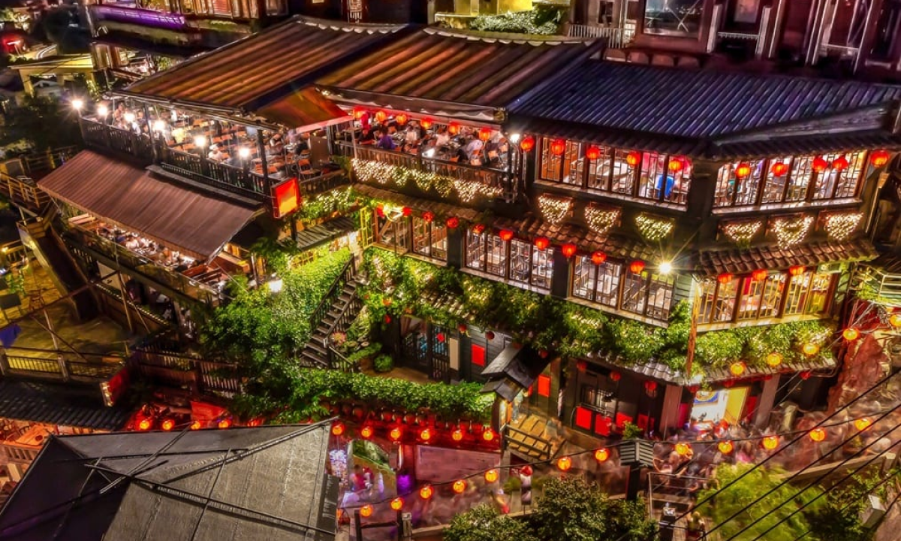
細い路地の階段に沿って建つ古い館に、提灯が灯るノスタルジックな風景。1989年、映画「非情城市」の舞台になったことをきっかけに再び注目を集めると共に、日本では、九份の町中にある建物が2001年公開の映画「千と千尋の神隠し」に登場する湯婆婆の湯屋を彷彿させるとして話題に。日本統治時代に建てられた古い建物が残ることから、どこか懐かしい雰囲気が漂う町並みは日本人の琴線に触れ、今や台湾で行きたい観光地ナンバーワンとなりました。
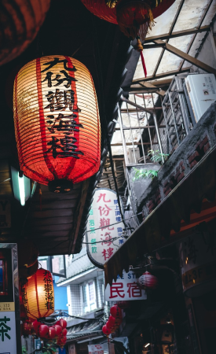
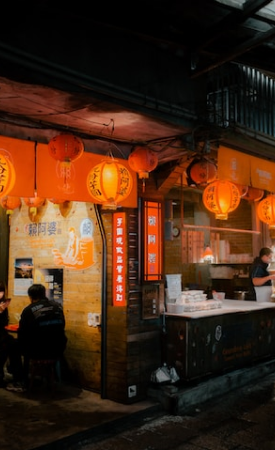
おすすめ観光時間は幻想的な夕暮れがねらい目15:00〜19:00
台北101
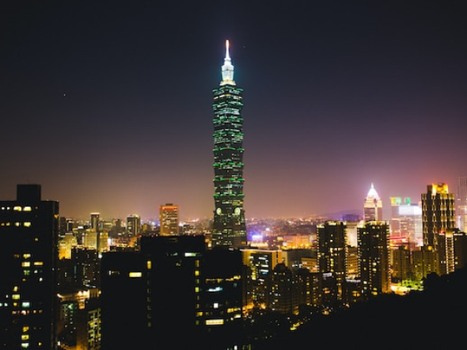
高さは509.2m、地上101階からなり、名前の由来にもなっている。エレベーターは東芝エレベータ製で、毎分1,010メートル（時速60.6キロメートル）の速さで上昇でき、地上1階から展望台のある89階（地上382.2メートル）まで39秒で到達する。展望台、オフィス、レストラン、ショッピングモールなどが入る台湾を代表するランドマークタワー。有名なカウントダウンパーティーをはじめ節目に合わせたライトアップを行っています。
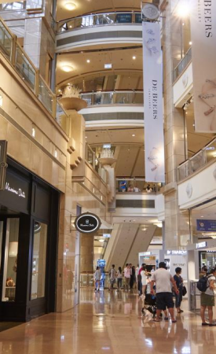
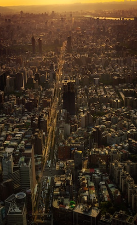
おすすめ観光時間は展望台営業時間帯11:00〜19:00
NightMarket 夜市
台北観光の夜の目玉と言えば、何と言っても夜市（ナイトマーケット）があげられます。毎日市内の各所でひらかれ、夕方から夜遅くまで多くの人々で賑わっています。絶品B級グルメ・小吃からファッション、ゲームといったお店が集まっています。
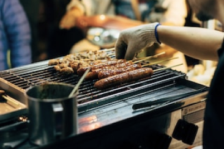
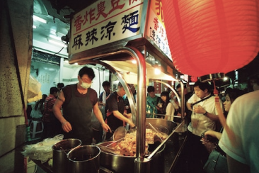
Access アクセス
各地へのアクセスにご利用ください
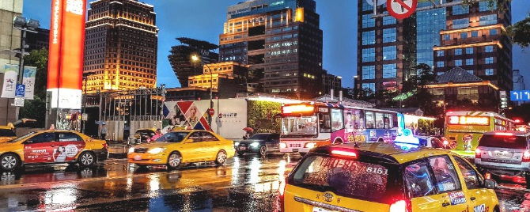
■MRT 地下鉄：初乗り20元
乗り方は日本の地下鉄とほぼ同じ。改札を通る時には、切符・ICカード共にタッチ。台北MRTは全て各駅停車です。
■バス：初乗り15元
バス停は、ポールが立っているだけ、大通りでは車道の真ん中のバスレーン沿いにあります。乗りたい場合、バスに向かって手を挙げます。乗車して、現金で払う場合は運転手に行先を告げて運賃箱にお金を入れます。
■タクシー：初乗り70元
市内の移動で気軽に使うことが出来ます。MRTなどが運行しない真夜中や早朝の移動にも便利です。新幹線の駅や有名観光地などにはタクシー乗り場が準備されているので、そこから乗りましょう。ホテルならフロントで呼んでもらいます。
■悠遊カード：販売額100元
現金をチャージして使うことが出来る交通系ICカード。台北旅行の際に手に入れておくと便利です。MRT・バス・台湾鉄路などで使用することができ、切符を買う手間がなく、運賃が割引（MRTは二割引き）になります。
寧夏夜市
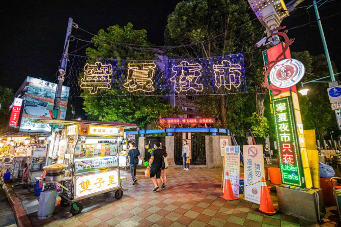
寧夏路夜市は台湾伝統の屋台料理やB級グルメがメインの夜市です。特に大同区の圓環付近には懐かしいグルメがたくさん集まっていますので、思う存分味わってください。また、ここの夜市は歩道と車道が分かれているので、食事やショッピングに便利です。食の夜市とも言われる寧夏路夜市には毎日、大勢の人々が訪れています。
営業時間
日曜日17:00〜25:00
月曜日17:00〜25:00
火曜日17:00〜25:00
水曜日17:00〜25:00
木曜日17:00〜25:00
金曜日17:00〜25:00
土曜日17:00〜25:00
饒河街観光夜市
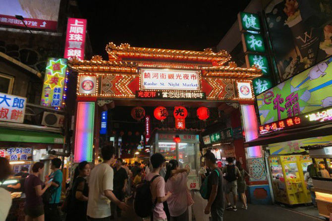
饒河街観光夜市は、屋台料理から雑貨や生活用品も扱う夜市です。その手ごろな値段が魅力的で、多くの人々で賑わいます。最も観光客に人気があるのは「藥燉排骨」「胡椒餅」「水煎包」「蚵仔麵線」など行列ができる人気料理と、「麻辣臭豆腐」「牛肉麵」「天婦羅」など台湾の伝統的な屋台料理も定番です。
営業時間
日曜日17:00〜23:00
月曜日17:00〜23:00
火曜日17:00〜23:00
水曜日17:00〜23:00
木曜日17:00〜23:00
金曜日17:00〜23:00
土曜日17:00〜23:00
士林夜市
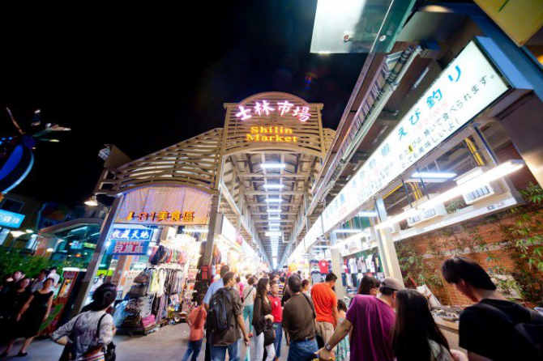
ここは市内で最も規模が大きく知名度の高い夜市で、台湾のおいしい屋台グルメからユニークな雑貨まで、ありとあらゆるものが売られています。その種類の豊富さ、敷地の広さ、歴史、そして夜遊びスポットとしての人気度と、士林夜市の魅力は何から何まで台北ナンバーワン。台北観光では絶対にはずせない魅惑スポットです。
営業時間
日曜日16:00〜00:00
月曜日16:00〜00:00
火曜日16:00〜00:00
水曜日16:00〜00:00
木曜日16:00〜00:00
金曜日16:00〜00:00
土曜日16:00〜00:00
通化夜市
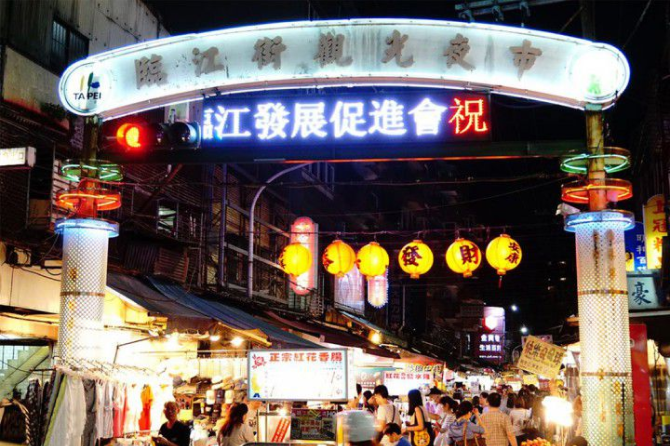
台北の他の夜市と比べると小規模ではあるものの、食べ物においてはどの夜市にも決して劣りません。有名な駱記小炒（炒め物）、裕品元の氷火湯円、平価鉄板焼、通化夜市の揚げサツマイモボールは、ぜひとも賞味したい特色的な伝統軽食です。マッサージ店もたくさんあり、1日の終わりに最適な夜市です。
営業時間
日曜日18:00〜24:00
月曜日18:00〜24:00
火曜日18:00〜24:00
水曜日18:00〜24:00
木曜日18:00〜24:00
金曜日18:00〜24:00
土曜日18:00〜24:00